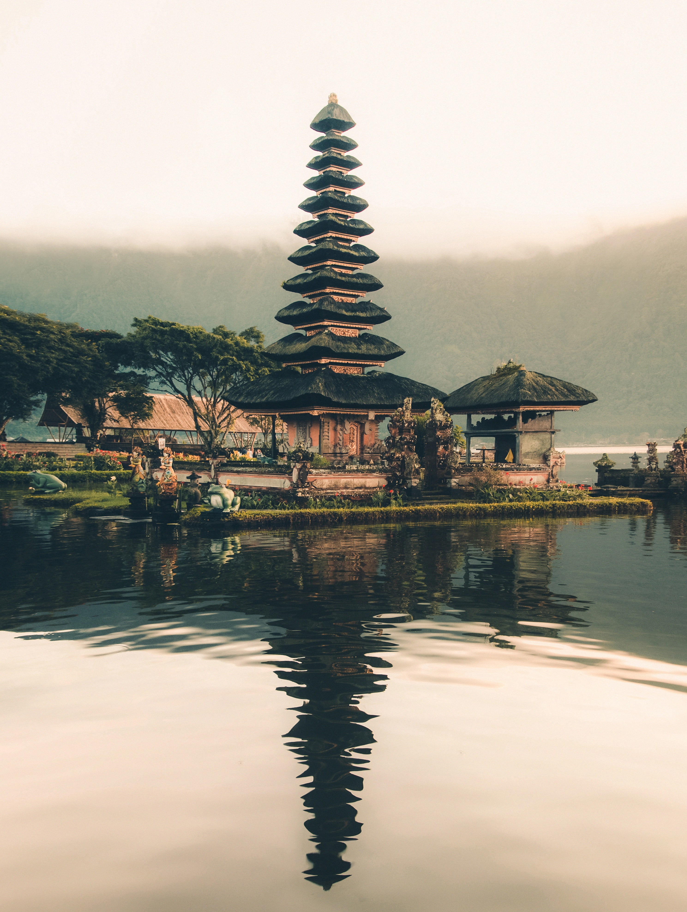
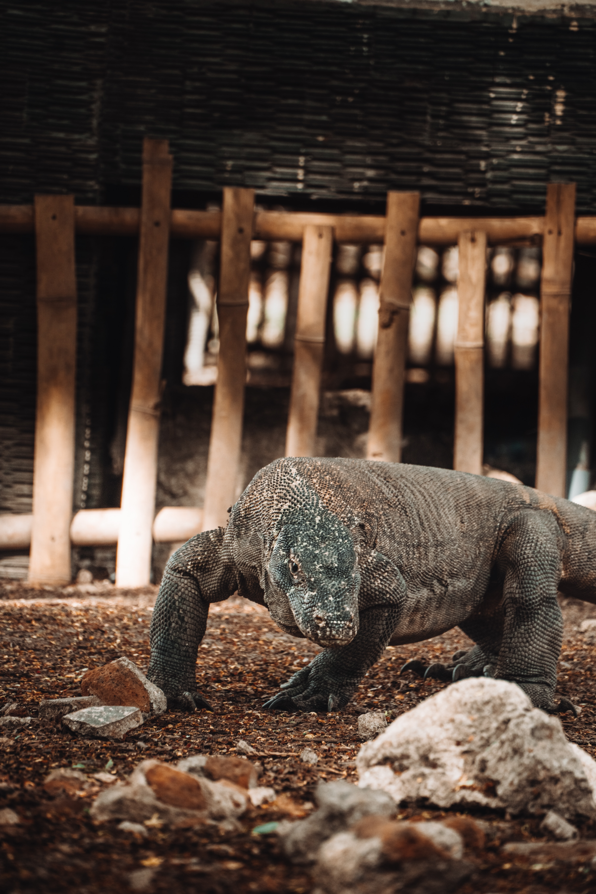
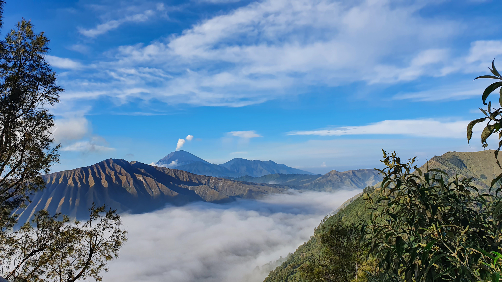
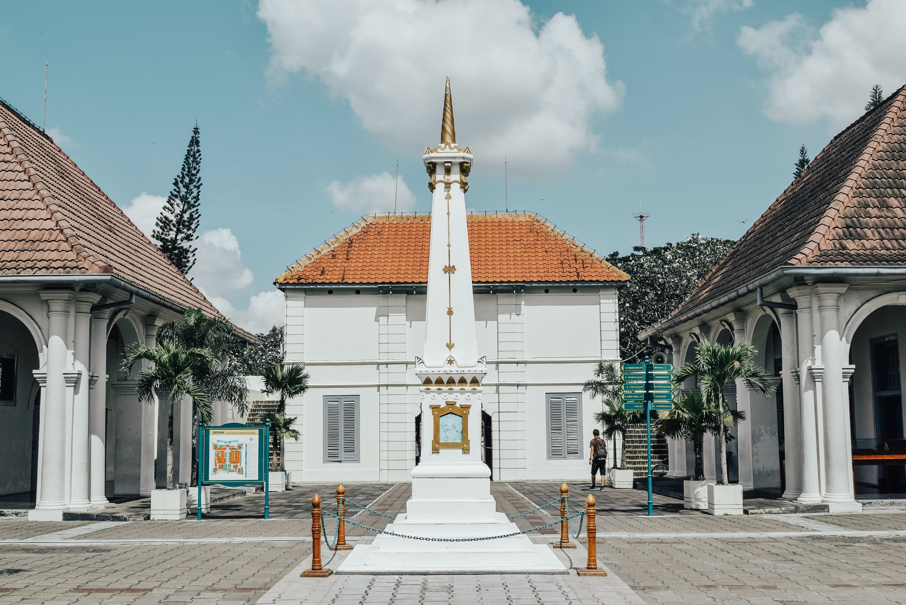
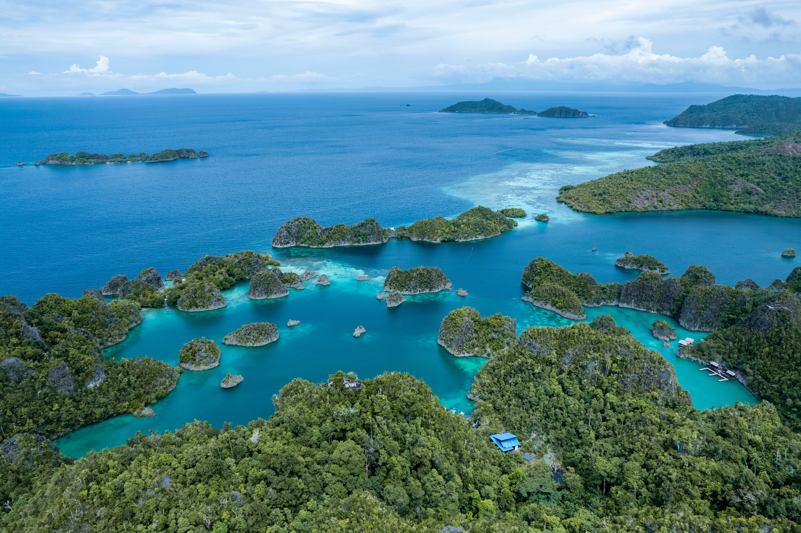

Travel Blog
Magical Exploration of the Archipelago: An Exciting Adventure in Indonesia

Bali: A Tropical Paradise The journey begins on the island of the gods, Bali. Known as a tropical paradise, Bali offers alluring white sandy beaches such as Kuta and Seminyak. I felt the spiritual power at Besakih Temple, one of Bali's largest temples. Traditional Balinese dance and music bring to life a rich and colorful culture.

My next adventure took me to Komodo Island, home of the incredible ancient animal, the Komodo dragon. I was nervous and amazed to see this giant reptile roaming around Rinca Island. Additionally, snorkeling at Pink Beach Island introduced me to the incredible underwater beauty.

Traveling to the east of Java, I discovered a wonder in Bromo National Park. At the top of the Bromo volcano, a refreshing morning provides a stunning view of the sunrise. The thin mist adds to the mystical feel around the volcano. I also explored the unique rocky desert surrounding it.

Yogyakarta: Cultural and Historical Heritage,Upon arriving on the island of Java, Yogyakarta greeted me with its rich cultural and historical heritage. Exploring Prambanan Temple and Borobudur Temple provided me with a deep insight into the glories of the past. Additionally, I enjoyed the vibrant nightlife of Malioboro, with its delicious specialties and street art performances.

Raja Ampat: An Underwater Paradise
A journey to underwater beauty is incomplete without visiting Raja Ampat in Papua.The colorful coral reefs and incredible marine biodiversity are fascinating. Snorkeling and diving in these waters is an unforgettable experience.